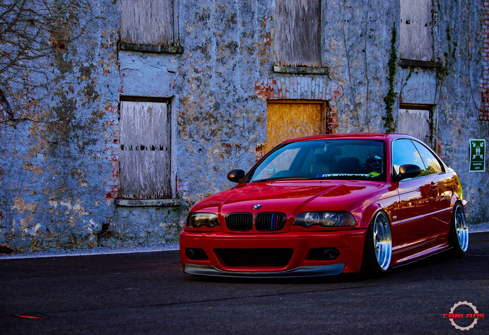
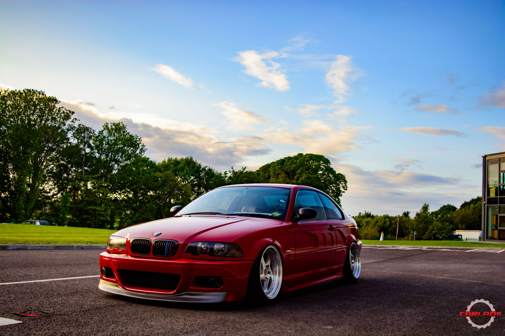
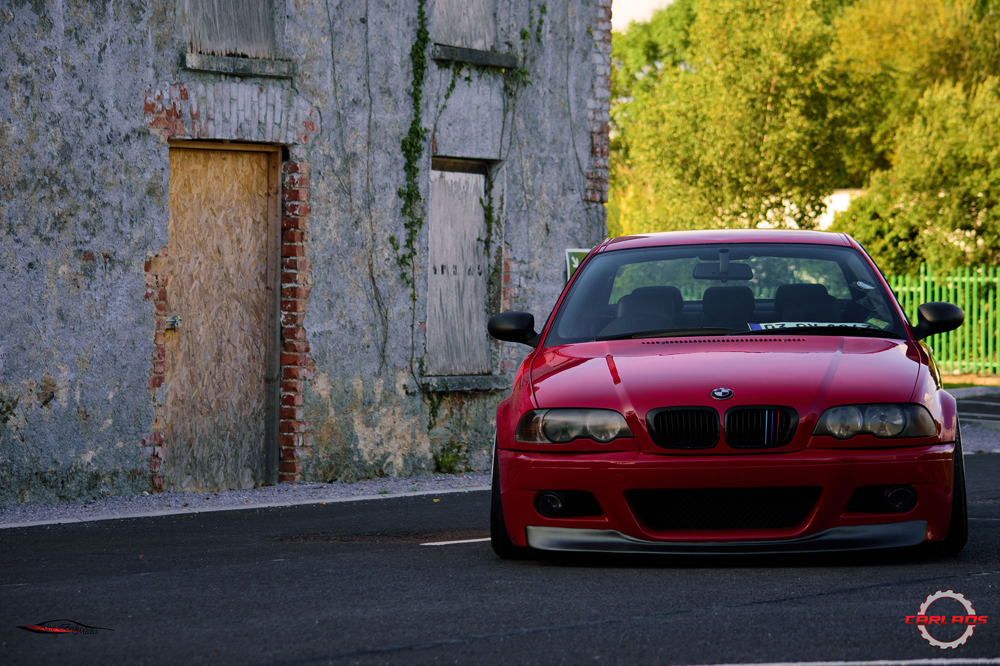
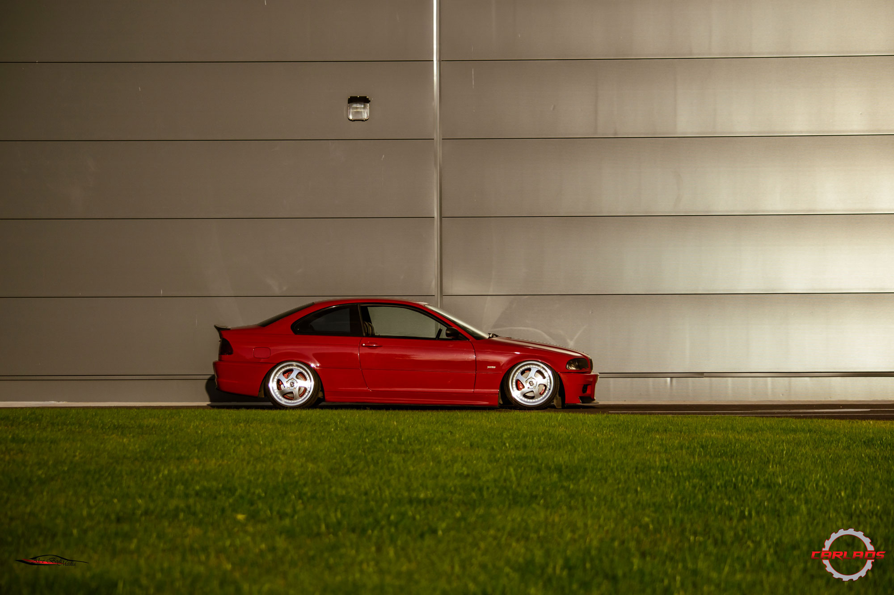
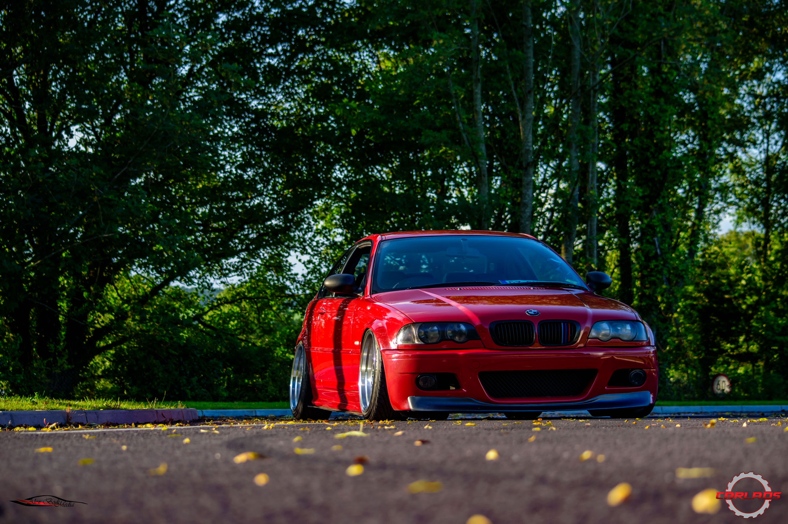
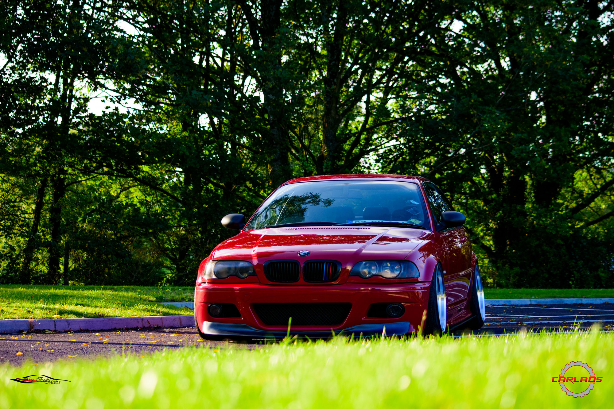
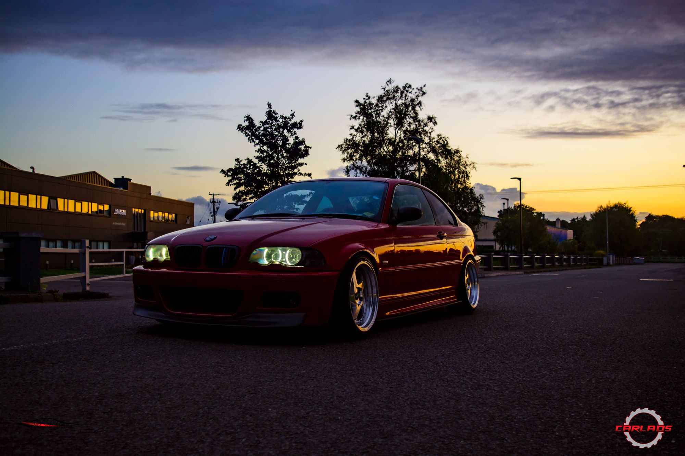

Jojo's bagged BMW E46
It all started with race cars
Initially, there was the man. The man was walking everywhere, caring his spear and the fresh kill on his back. But eventually the man needed a way to carry more with less effort, faster too. So the man started riding horses. Chances are, when the first two horse riders met each other, first thing they did was see which one can go faster. It just might be that this how racing was born.
Years have passed and the man needed more. More power, more speed and eventually the car was invented. This car was a weird wagon, without a horse, with skinny wheels that didn't necessarily go faster than a horse. But then another car was built and, just like back in the day when the two horse riders met, the man needed to know which one was faster. And racing was about to be taken to a whole new level.
Naturally, the car evolved into what it is today and race cars have always been to forefront to this development. Most of the cutting edge technologies we see today on road cars, were more than likely developed and tested on the race track, by armies of engineers working together with some crazy dudes that all they want to do is go fast.
We don't all care too much about developing new technologies, most of us are more interested in what the cars can do, and not how they do it, on how they look and not necessarily on why they look the way they do.
Lowered cars
One of the first things noticeable on a modified car, is the stance. This is something that was initially borrowed from race cars, but while race cars were lower in order to have a better center of gravity, thus having a better handling, modified street cars were lowered for the looks. And we do have to agree that they do look a lot better.
Some are just a tiny bit lowered, so that the overall look would be somewhat better, while some go to that other extreme where they (nearly) touch the ground, scrape on any pebble and become a pain each time they are taken out for a spin. Speed bumps? you mean mountains, right?!
But this BMW can do it all, this is one of the few that were done right. The owner of this German piece of engineering knew that a car should look good, but should also be functional. In order to achieve this and still lower that car to the desired, aggressive stance, Jojo installed some airbags, this way the car can lift up when driving. No scrapes, no fear of speed bumps either. Ok, maybe just a little fear.
This project was initially started as a static stanced car, but with the limitations of a lowered car on coilovers, Jojo decided to switch to airbags, this giving him the option to still properly drive the car, while still having an aggressive stance when the airbags are emptied.
But things didn't stop here, lowering the car was just the start. The deep dish J9.5 wheels with 10mm spacers add even more to the aggressive look of the car. The package is completed with a few carbon bits and some M style elements, making this E46 look lean and mean, like a beast ready to pounce on any unsuspecting prey.
Nothing was left to chance on this car and it certainly looks like this one will be kept for a long time, if not forever, in Jojo's garage. And that's a good thing. In a world where cars change owners faster that they do tyres, it's nice to know that there are still people out there who enjoy the car they built, care about it and maybe even sacrifice in order to keep it close.